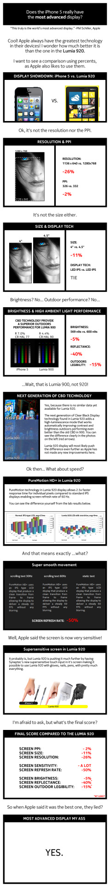
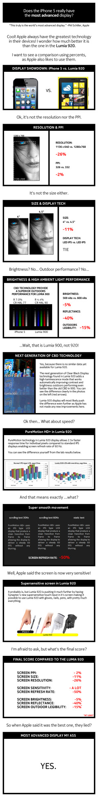
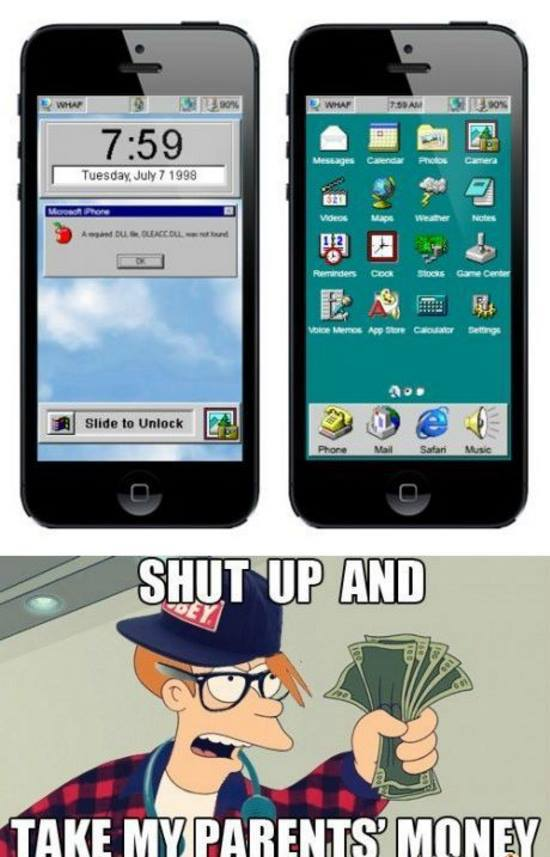

I use a Lumia and it’s great.

I use a Lumia and it’s great.
For those of you that can’t choose between Windows and Mac.

I don’t know about you, but iOS 98 would be pretty cool.

meanwhile in 1997 these cutting edge internet themed crayons were born
Remember when the Internet was so amazing back in the ‘90s?
Look closely.

And you thought it all started with Vista.
Bill Gates is Windows.

Windows 95 certainly was popular.

Don’t be fooled, that isn’t Windows XP.
We just keep on growing! For you tech fans out there, we present a brand new Tumblr blog sure to have you filled with nostalgia!
Presenting 98NT. Bringing back the glory days of Windows and computing in the ‘80s and '90s, 98NT is a treasure trove of screenshots, blue screens and some rare pictures and GIFs not seen since the 1990s! It even looks like Windows 98. Satisfy your inner 32-bit nerd with a trip down memory lane with 98NT. That’s where you want to go today.
Presenting Theodore Roosevelt Facts. The oldest of all the blogs in the Group, TRF goes to show that Teddy Roosevelt was the original manly man, long before Chuck Norris was on the scene.
The Googie Group: House of Googie • Random Hilarities • 98NT • Teddy Roosevelt Facts

It almost happened!

It seems like a lifetime ago that Windows was cool.


It wouldn’t be the ‘90s without these two.
And what a family it was.

Remember when Microsoft made golf games?

I don’t know about everyone else, but I like Windows Me, it’s never given me any problems.

Windows 95 brings back pleasant memories.

Windows 98 was without a doubt one of Microsoft’s finest operating systems, up there with 95, 2000, XP and 7.